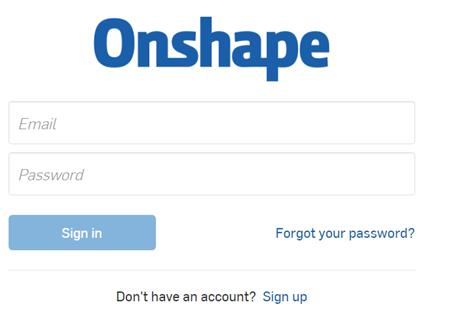
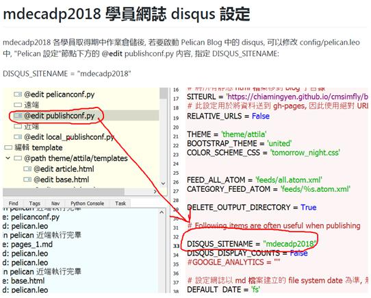

了解電腦輔助設計的課程內容
通過github協同工作
git 指令複習
git add .
新增所有改版內容
git commit -m "提交訊息, 用來辨識版本"
在近端提交改版內容
git push
將近端改版內容推送到遠端
git pull
拉下遠端新版本內容, 在 fossil scm 使用 fossil update
git log
查驗 git 提交推送紀錄
git status
查驗狀態
git 新增提交推送的身分綁定
刪除近端與遠端的 Git 分支.
進行onshape 賬號的註冊
認識onshape

Onshape 號稱未來的 CAD。只要在能上網的終端，打開流覽器即可訪問，不需要下載任何的安裝檔，使用的永遠都是最新版本，因此相容性不會成為問題。
此外協作功能是 Onshape 的一大特色。Onshape 不僅支援跨設備分享設計，而且還可協作編輯，這一切都是在流覽器上即時進行的。其秘密在於採用了混合方案來計算產品的曲面和運動。除了利用使用者設備的處理器能力以外，Onshape 還結合了雲基礎設施的能力來對設計進行複雜的渲染，有了強大的雲計算能力支撐，使用者側設備的能力就不是問題了。
